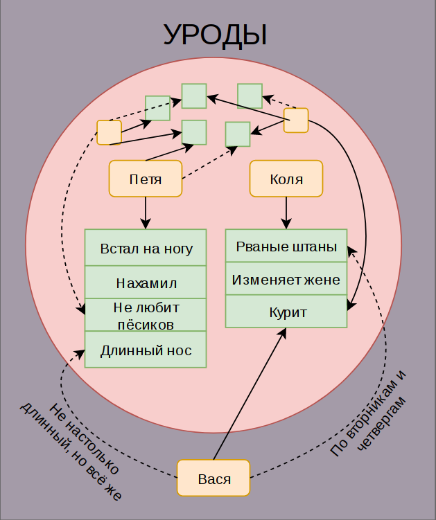
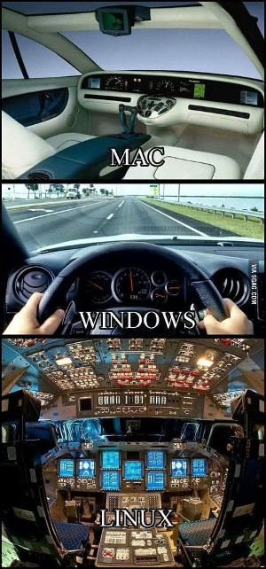
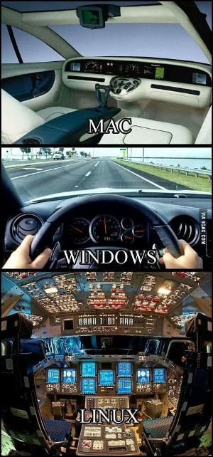

Про женкскую красоту и дорогую древесину
Моя жена периодически смотрит различные видео, посвящённые маникюру, косметике и прочему девочковому стаффу. Особо не прислушиваюсь, но так или иначе всё это приходится слышать. Иногда это провоцирует появление различных сугубо мужских мыслей на эту тему, которые я и выложу тут. Скажу сразу - да, наверное я чего-то не понимаю (и не против, чтобы мне что-то объяснили), но большинство подобных описанным ниже ситуаций происходит по той причине, что женщинам просто хочется почувствовать себя особенными. Так же я прекрасно понимаю, что мы симметрично можем глупо выглядеть в глазах женщин со своими увлечениями электроникой, машинами и компьютерными играми.
Теги: мысли-вслух
Про фильтры и информационный шум

Мой хороший друг написал статью о твиттере, социальных сетях и почте. В статье помимо прочего было замечено следующее:
Соцсети, например, создают очень сильный информационный шум. И если не уметь его фильтровать и отсеивать, то пользы не будет никакой. Будут усталые глаза, затекшая шея и ощущение, что ты сделал что-то полезное (на самом деле нет). Самый эффективный и простой инструмент доставки полезной информации — это электронные письма. И пока ничего более удобного не придумали.
Теги: мысли-вслух
Про математический обман
Недавно моя хорошая подруга написала вот этот пост, в котором говорится о том, что многие люди не хотят считать, в том числе даже и свои средства, прикрываясь тем, что это для них сложно и вообще, они гуманитарии. Хотел бы продолжить данную тему и привести другие примеры.
Наш мозг обмануть несложно. Мозг ленив, он вообще не любит лишнюю работу и поэтому там, где считает это возможным, идёт по пути наименьшего сопротивления, чем и пользуются те же кредитные агенты и маркетологи. Пожалуй, самый наипримитивнейший способ, которым пытаются обмануть наш мозг - это ценники в магазинах. Все эти "9999" рублей, которые в представлении маркетологов на подсознательном уровне должны якобы сформировать представление о том, что цена товара не десять тысяч, а девять с чем-то. А это "что-то" видимо, следуя той же логике, должно восприниматься как нечто несущественное. Да, это самый примитивный пример и многие наверное думали об этом в ключе: "Да кто вообще на это клюёт? Это же очевидно!". Возможно, некоторым это казалось смешным в своей наивности.
Да, мы можем тихонько посмеяться над убогими, на ком срабатывают и такие нехитрые методы, мы-то сразу при подсчёте покупок округляем цены в бОльшую сторону, не правда ли? Но стОит сделать маааленький шажок в сторону, стоит чуть-чуть усложнить задачку, как сразу же мы клюём на удочку, стОит нам подсунуть нужную цифру. И жертвой вполне может стать человек, не считающий, что у него гуманитарный склад ума. Не смотря на то, что для успешного обхода большинства граблей хватит общего образования в рамках пяти классов школы. Но сначала про чуть более сложное, но тем не менее, очевидное на бытовом уровне вымогательство.
Теги: мысли-вслух, жизненное
Про аспекты выбора
Шашечки или ехать?
Как-то раз много лет тому назад мне позвонила знакомая девушка, сказала, что находится в Москве, хотела бы купить себе ноутбук и ей нужна моя помощь в выборе. Что-ж, время у меня тогда было и я по доброте душевной решил помочь. Я спросил, для каких целей приобретается ноутбук, на что получил один из стандартных ответов - редактирование документов, фильмы, музыка, интернет. Отдельными требованиями была компактность и автономность, чтобы была возможнось комфортно носить его с собой на учёбу. Осведомился о бюджете и, спустя какое-то время, потраченное на изучение обзоров, рейтингов и отзывов, нашёл замечательный вариант 12'' нетбука по отличной цене. Перезвонил девушке, сообщил, номер товара, адрес магазина, где этот нетбук есть в наличии, и даже то, как ей из текущего её местонахождения на метро проехать к нужному месту. Меня душевно поблагодарили и попрощались, после чего я об этой истории благополучно забыл на какое-то время.
Прошло полгода, после чего я к этой девушке попал на день рождения. На столе у неё стоял самсунговский ультрабук, стоимостью в 3 раза выше, чем то, что я рекомендовал и в два раза дороже озвученного изначально бюджета. Полюбопытствовал у хозяйки, почему она взяла именно его.
- "Ну он красненький, симпатичный такой, мне нравится!"
Теги: мысли-вслух
Про подкасты, аудиокниги, навыки восприятия и время

Подкасты
Не смотря на то, что на дворе уже не начало двухтысячных, иногда (к счастью, всё реже и реже) при употреблении понятия "подкаст" я получаю в ответ недоумевающий взгляд и вопрос - "Что это?". Подкаст-культура в нашей стране распространена существенно слабее, нежели в США, но тем не менее, нам тоже есть, чем гордиться и что слушать.
На всякий случай, если меня читает кто-нибудь, кто до сих пор не представляет, что это такое, я кратко объясню. Ближе всего к понятию "подкаст" наверное находится термин "радиопередача". Подкасты могут быть тематические (что чаще всего) и, соответственно, нетематические. Подкасты могут иметь разный формат. Самый частый - это несколько ведущих, обсуждающих список заранее подготовленных тем. Так же к ведущим могут присоединиться приглашённые гости. Иногда ведущий может быть и один. Подкаст так же может полностью состоять из зачитываемых статей или отрывков книг, может содержать музыкальные произведения или их фрагменты.
Теги: мысли-вслух, книги, подкасты
Про евреев, чувства верующих и законы
Сразу хотел бы предупредить, что никого не хочу обидеть или оскорбить. Это взгляд со стороны на вещи и события, происходящие вокруг. А тема меж тем достаточно щекотливая.
Сочетание несочетаемого
Моя прабабка была еврейкой. С помощью нехитрых вычислений, доступных всем со школьной скамьи, можно легко подсчитать, что номинально я на 12,5% еврей. Сам же я себя евреем не считаю абсолютно, потому как это не только национальность, но и религия, а от любой религии я крайне далёк, ибо рождён был в Советском Союзе, сделан был в СССР. С детства я придерживался материалистических взглядов на жизнь, лет в шесть уже знал, кто такой Дарвин, а в семь в общих чертах представлял возможные механизмы появления и развития вселенной от большого взрыва и до наших дней. Одним словом, почвы для развития во мне религиозных взглядов на жизнь не было и меня это вполне устраивало.
А ещё у меня есть хороший друг. Мы познакомились с ним в университете и до сих пор общаемся, хотя уже и не так часто. Друг является чистокровным породистым евреем, причём достаточно религиозным. И при этом он всегда был одним из первых почти по всем показателям в нашей группе (мы обучались на мехмате), а впоследствии какое-то время преподавал математический анализ в ПГУ. Для меня всегда было огромной загадкой, как в одной и той же голове умещается религия и огромное количество знаний плюс критическое мышление, которые требуются для выживания обучения на мехмате? Почему они не вступают в конфликт друг с другом? Почему навыки анализа, полученные в одной области не применяются к другой?
Я не имею ничего против религии - каждый имеет право верить во всё, во что пожелает, пока это не задевает свобод других людей. Но для меня это странно. Часть знаний просто является привилегированной, не подлежащей критике и противоречащей остальной картине мира.
Теги: мысли-вслух
Про ярлыки и квадратно-гнездовой способ мышления

Один мой друг натолкнул меня на мысли о "навешивании ярлыков". Что же в сущности такое - эти ярлыки и зачем их на кого-то навешивать? На мой взгляд всё очень просто. Ярлыки - это принадлежность к некоей категории или нескольким категориям. Наш мозг склонен структурировать информацию, потому что в таком виде ей легче оперировать и её легче хранить. Мозг бережёт себя от перегрузок, переходя на более высокий уровень абстракции. На этом уровне он отбрасывает массу незначительных, как ему кажется, деталей, создавая ассоциативную связь вида "Вася" -> "Урод". Для создания данной связи ему нужно, чтобы в категории "Уроды" уже находился некий индивид, скажем, "Петя", или группа индивидов, например, "Байкеры", которые имеют некие признаки или совершили некие действия подобные действиям нашего гипотетического Васи.
Теги: жизненное, мысли-вслух
Про праздники, поздравления и специализацию
Все мы любим праздники! Или не все? Я например, не очень их люблю, а некоторые очень даже не люблю. Например, свой день рождения. Об этом имеет смысл рассказать отдельно, потом вернусь к другим. Когда-то давно я указал дату своего рождения везде, где мог - в аське, в скайпе, затем в контакте, когда он появился и всё это заботливо напоминало множеству моих знакомых о факте моего существования. К сожалению я не сразу понял, чем это грозит. По мере увеличения количества этих знакомых, увеличивалось и количество "поздравлений" с днём рождения. Что же в этом плохого? Дело в том, что я обладал рядом навыков и опытом, который мог быть кому-то полезен и в день рождения я получал от пяти до пятнадцати звонков примерно следующего вида:
- Хээээй-привет-как-дела-с-днём-рождения-переустанови-мне-винду!
- Счастья-тебе-удачи-здоровья-у-меня-навернулась-программа-для-записи-дисков!
- А-правда-что-у-тебя-день-рождения-ну-тогда-с-ним-кстати-у-меня-рейдмассив-рассыпался!
- Мужик-поздравляю-с-днюхой-сможешь-заехать-посмотреть-мой-системник?
Всё это и множество других вариантов поздравлений зачастую произносилось слитно, на одном дыхании, одним восторженным предложением. То есть, интонация была поздравительная, смысл - не очень. Мол, поздравляю тебя, у меня рейд рассыпался и теперь это твоя проблема! Иногда поздравление выглядело нормально, следовало несколько связных и осмысленных предложений, а потом, подойдя издалека, человек интересовался, как у меня со временем и не мог бы многоуважаемый джинн быть любезен? Сначала Джинн был любезен, но спустя несколько лет такой котовасии любезность резко устремилась к нулю.
Теги: мысли-вслух
Немного про биткоины
Подкинули занятную ссылку на форум. Там описано, как украли 350 тысяч долларов. Оплачивать биткоинами что-то очень удобно, но оплатить ими подобную сумму без оформления нотариально заверенных документов - идиотизм редкостный на мой взгляд.
Меня вообще поражает то, как часто инфантилизм идёт рука об руку с желанием рискнуть большими суммами денег или вообще всем, что у тебя есть. А так же с нежеланием разобраться в механике тех процессов, в которые ты эти средства вкладываешь и хотя бы задуматься о том, что будет дальше, если что-то пойдёт не так, как ты задумал и события начнут развиваться не самым сказочно-прекрасным для тебя образом. Сколько таких людей, живущих в мире пони и радуг? Людей, не обладающих соответствующим образованием и уровнем подготовки и радостно сующих свой писюн в шестерёнки механизмов рынка ценных бумаг или криптовалют и ожидающих приятных ощущений? А потом боль и изумление - мол, как же это так произошло, ведь всё представлялось совсем не так?
После бума на росте курса биткоина, я видел множество сообщений на форумах и в соцсетях, когда курс обвалился. Выглядели они примено следующим образом: "Я тут квартиру заложил, продал машину, взял кредит, позанимал денег у знакомых, а курс обвалился! Что же мне теперь делать?" Вариант "подумать заранее" очевидно, не рассматривался в принципе. Самый шедевральный вариант выхода из сложившейся ситуации, который я видел на форумах, заключался в том, чтобы написать петицию (даже не было указано кому и куда) и собрать под ней подписи, чтобы курс биткоина вернули обратно. Сказочные идиоты! Я думаю, в соответствии с полузабытой советской традицией нужно было написать в спортлото. Там точно помогут.
Теги: мысли-вслух, идиоты
Про очистку воды, вампиров, собак, ножи, цыган и наследство

Казалось бы, что общего между всеми понятиями, приведёнными в заголовке? Ответ очень прост - они все различными путями могут лишить вас денег. Интернет теперь доступен повсеместно, каждый знает, что такое google, практически у каждого человека есть возможность получить любую информацию с минимальными (я бы даже сказал минимальнейшими) усилиями. Причём не только ту информацию, которая раньше поступала из средств массовой информации и которая была доступна в библиотеках, но и ту, которую активно генерирует сам социум. Если раньше до нас доходили какие-то слухи, то сейчас любой может зайти на любой тематический форум и выложить всё, о чём он думает, описать всё, что с ним произошло и поделиться любым опытом с достаточно широким кругом лиц. Всё это индексируется поисковыми системами и доступно для поиска.
В этих условиях мне уже давно кажется крайне странной одна вещь - схемы мошенничества, которые должны были естественным путём исчезнуть, как неприносящие дохода, цветут и пахнут! Как минимум, эти схемы должны были многократно усложниться, обрасти деталями, мутировать, эволюционировать - одним словом измениться, чтобы как можно сильнее отличаться от уже известных вариантов. Но нет, они как акулы или змеи, которые не изменились за последние несколько миллионов лет - живут и здравствуют.
Теги: жизненное, мысли-вслух
Запугивал ежей обнажённый филей.

Только что смотрел видео на канале "Амперки". Периодически там появляется интересная информация о каких-нибудь полезных модулях или проектах. Конечно, по большей части это реклама их продукции, но сделано креативно и зачастую с юмором. Например, понравился проект, когда они собирали зонд с датчиками и запускали в стратосферу. Канал в основном рассчитан на начинающих, кому хочется сделать что-то своими руками в области электроники и программирования, но всё-равно в последнем видео меня задела одна фраза: "Но непонятные на первый взгляд строчки кода всё ещё отпугивали потенциальных разработчиков". Если тебя отпугивают непонятные строчки кода, то ты кто угодно, но не разработчик, пусть даже и потенциальный. Строчки кода в тебе должны вызывать что угодно, но не испуг. Это всё-равно что суп, отпугивающий потенциального повара. Я вот не считаю себя разработчиком, но строчки кода меня почему-то не отпугивают, а зачастую и вызывают интерес.
Теги: мысли-вслух
Счастье - это логично
Не так давно я начал читать книгу Марка Менсона "Тонкое искусство пофигизма". Отчасти банально, отчасти заставляет задуматься. Есть множество прописных истин, которые всем известны, но в то же время настолько избиты, что мы им не следуем или вообще не воспринимаем их, как что-то, что стоит у тебя навиду на полке шкафа уже много лет и превратилось из самостоятельного объекта в некий неотъемлимый элемент интерьера. Похоже, что эта книга - попытка ткнуть нас носом в несколько таких прописных истин, заставить достать их с полки, стряхнуть с них пыть и задуматься - зачем они вообще нужны и что из себя представляют.
Как и большинство вещей в этом мире, более сложные идеи можно разложить на более простые для понимания постулаты. Конечно, неплохо было бы сначала дочитать книгу до конца, а затем делать какие-то выводы, но кто мне помешает выкладывать в собственном блоге то, что мне приходит в голову по мере поглощения какой-либо информации?
Итак, на текущий момент вот несколько основных идей. Скажем так - краткое изложение пятой части.
Основная идея достаточно проста: умейте осмысленно подходить к тому, что вы считаете для себя по-настоящему важным и то, на что стОит тратить свои нервы и душевные ресурсы, а на что можно плевать с высокой колокольни.
Вторая идея - находясь в обществе потребления, наше сознание формируется таким образом, что на сознательном или подсознательном уровне мы считаем, что наша жизнь станет лучше, если в ней появится что-то новое, чего у нас нет - новая машина, новая работа, новые отношения, но на самом деле это в большинстве случаев не так.
Третья идея заключается в том, что наша жизнь - это череда больших и малых физических и душевных страданий. Эти страдания так или иначе неизбежны, но то, насколько легко мы их переносим, зависит исключительно от нас. Боль полезна и закономерна - она является нашим защитником от повторения негативного опыта, страдания заставляют нас развиваться и эволюционировать. Если в нашей жизни нет каких-то серьёзных проблем, то их место займут проблемы, придуманные нами и для нас важным станет то, что на самом деле яйца выеденного не стОит. Мы так устроены, что без страданий мы не можем.
Теги: мысли-вслух, книги
Протрите призму восприятия, это расширит кругозор
 

Не так давно в MacOS X с одним из обновлений приехала тёмная тема оформления. Ну тема и тема - подумалось мне - что ж в этом такого удивительного? Под тот же линукс тем оформления окон а-ля MacOS X, только в тёмном варианте вагон и маленькая тележка уже много лет, под винду думаю, тоже можно найти, если поискать. Ан нет, на некоторых форумах, в социальных сетях и на ютубе периодически встречаю посты пользователей MacOS, просто пропитанные восхищением этой тёмной темой. Похоже, тысячи людей неудержимо писают кипятком в связи с этим и я никак не мог понять, почему. В одном из постов я обнаружил фразу следующего вида: "это то, чего мы все так долго ждали". Как-то не соответствует такая бурная реакция значимости события, вы не находите? И с того самого момента мне казалось, что что-то мне эта ситуация напоминает, но я не мог вспомнить, что именно. Сегодня внезапно вспомнил. Цитата с башорга:
- Мне так нравится 10ка, там такая офигенная фича, можно делать виртуальные рабочие столы и на одном держать одни приложения, на другом другие, когда твой говнолинукс так сможет?
- М... Ну лет двадцать назад, где-то.
Вот, с восторгами о тёмной теме в MacOS примерно как-то так же. Ещё в этот список можно отнести например, магазин приложений в Win10, установку убунты в окружение Win (проекту WinE, использующемуся для симметричных целей в линуксе уже чёрт знает сколько лет). Думаю, если покопаться, то можно найти и ещё примеры. И каждый раз, когда какая-то привычная для тебя вещь приходит на другую платформу, подаётся это всё с такой помпой, будто её заново для этого изобрели. По крайней мере пользователи воспринимают это именно так и свято в это верят. Примерно как Американцы в исключительность своей нации - изнутри может быть оно так и выглядит, но снаружи это смешно. Почему-то по умолчанию человек считает операционную систему, которой он пользуется - лучшей. Не лучшей для него конкретно, а просто лучшей в принципе. Люди живут в рамках одной платформы, как в домике. Зачем пробовать что-то иное, если ты уже пользуешься лучшим из того, что изобрело человечество? Откуда и из каких углов сознания появляется это мнение об исключительности того, чем ты пользуешься? На что ещё оно распространяется при таком подходе? Где здоровое любопытство из разряда "а что там, за углом"? Гугл изобрёл андроид (привет тебе, Энди Рубин), Apple изобрела MaxOS (привет всем BSD системам), а дядя Гейтс изобрёл интерфейс Windows (привет фирме Xerox). Почему меня это всё так раздражает? Не знаю, наверное, по той же причине, по которой меня раздражают грамматические ошибки - не люблю невежество. В то же самое время я отдаю себе отчёт в том, что я во множестве других сфер такой же, если не бОльший невежда и наверное, кого-то это тоже очень раздражает. А возможно и то, что я излагаю сейчас, будет раздражать меня в будущем примитивностью формы и содержания - вполне вероятно.
Теги: linux, windows, macos, мысли-вслух
Про ценообразование, качество и сложность
Порою меня просто поражает такая вещь, как ценообразование. Понятно, что мы приходя в магазин, видим только верхушку айсберга, состоящую собственно из товара и его цены, мы не учитываем логистику, налоги, оплату труда продавцов, стоимость рекламы и массу всего прочего. Но если сравнить два товара, которые имеют примерно одни функции, примерно одну сложность производства, но цена которых отличается в два - четыре раза, возникают резонные вопросы - за что мы платим?
Теги: mac, knifes, мысли-вслух
О деталях и памяти
Это репост от 27 мая 2008 г. 17:54
Интересно, оказывается, в жизни бывают такие моменты, когда детали какого-то события оказываются важнее для тебя, чем само это событие. Но редко когда детали самой жизни оказываются ценны. Ан нет, получается, что и такое тоже может быть.
Когда-то, я вёл дневник. И обычно я записывал туда не какие-то события, которые происходили в моей жизни, а именно мелкие и незначительные её детали, которые ни для кого кроме меня не представляли никакого интереса. И как ни странно, эти детали помогают вернуться в прошлое лучше любой машины времени.
Теги: ностальгия, старое, мысли-вслух